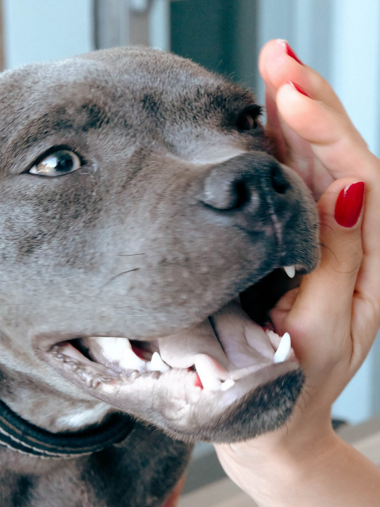

Care we provide
Happy Visits
Happy visits are for anxious pets, reactive pets, new puppies and kittens – and honestly, any pet or owner who would benefit from seeing the place before their first appointment. No exam, no treatment, no pressure. Just a chance to walk in, meet the team, get a treat, and head home on a good note. Whatever your pet needs to feel comfortable here, we'll figure it out together and come up with a gameplan for the future.
Book a Happy Visit